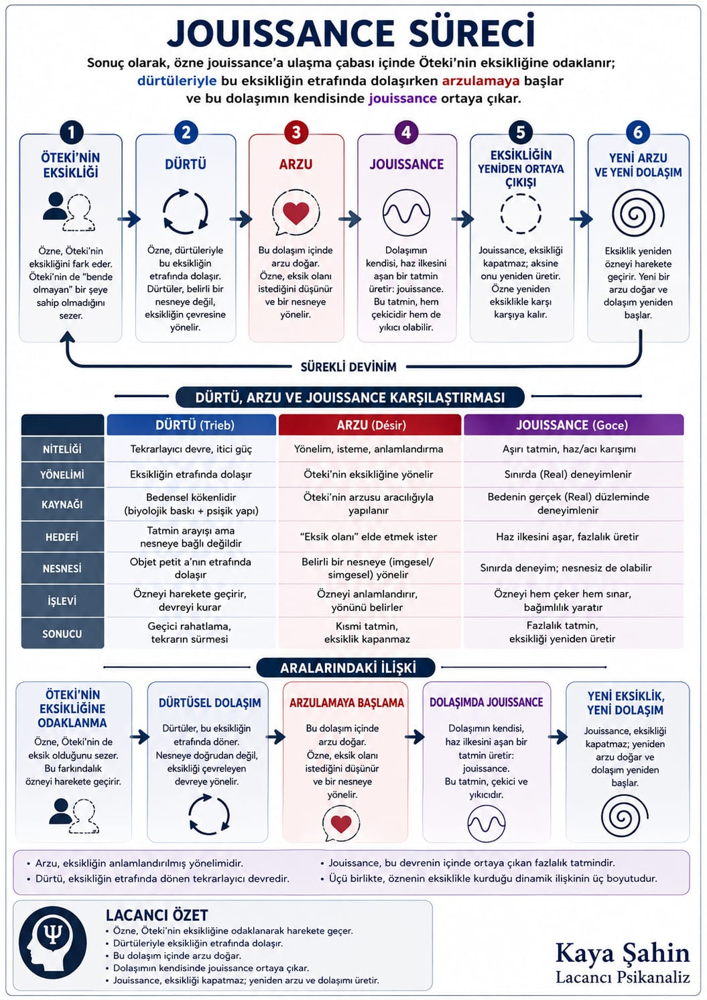

1 · 👁️
Öteki'nin eksiği
Öteki'nde — ve bende — bir şey yok
Fazla tatmin
Mutluluk değil. Fazla tatmin: hazzın sınırın ötesine itilmesi, acıyla karışması. Semptomun gizlice hizmet ettiği şey.
Öteki'nde — ve bende — bir şey yok
Deliğin etrafında döner
Dönüş bir dilek olarak okunur
Dönüşün kendisi fazlalık üretir
Deliği kapatmaz
Yeni yörünge
